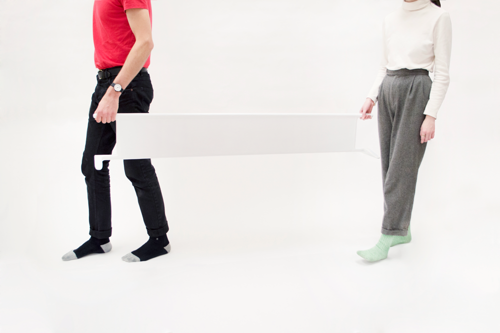
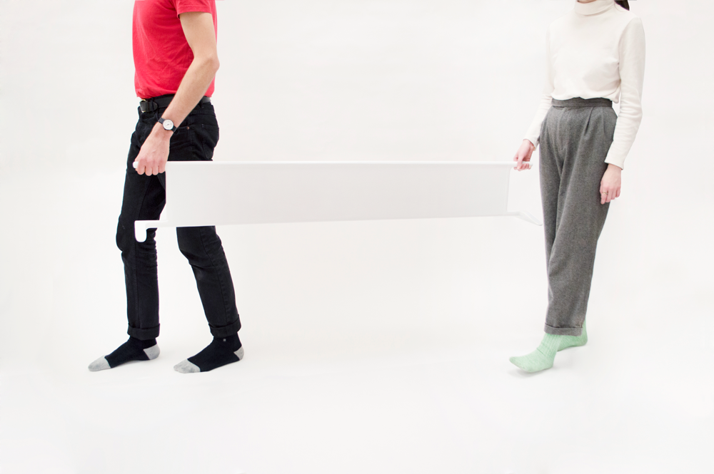
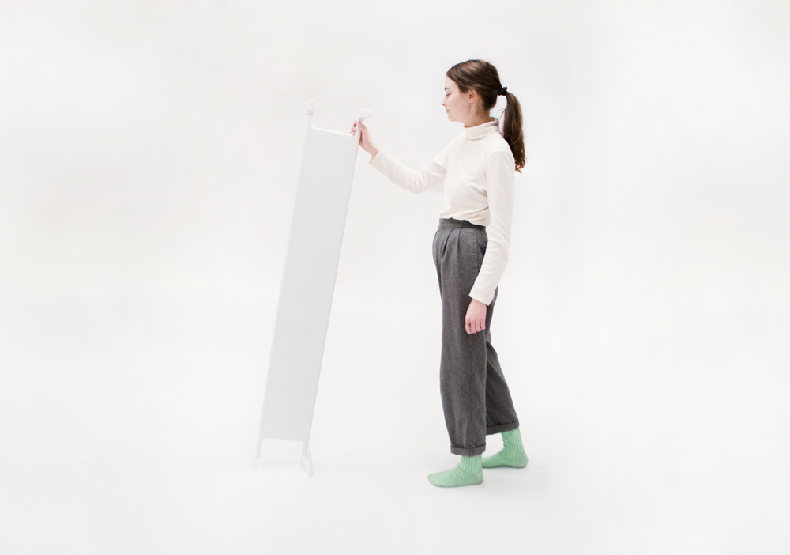
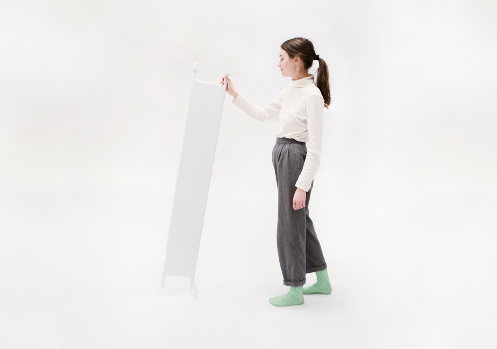
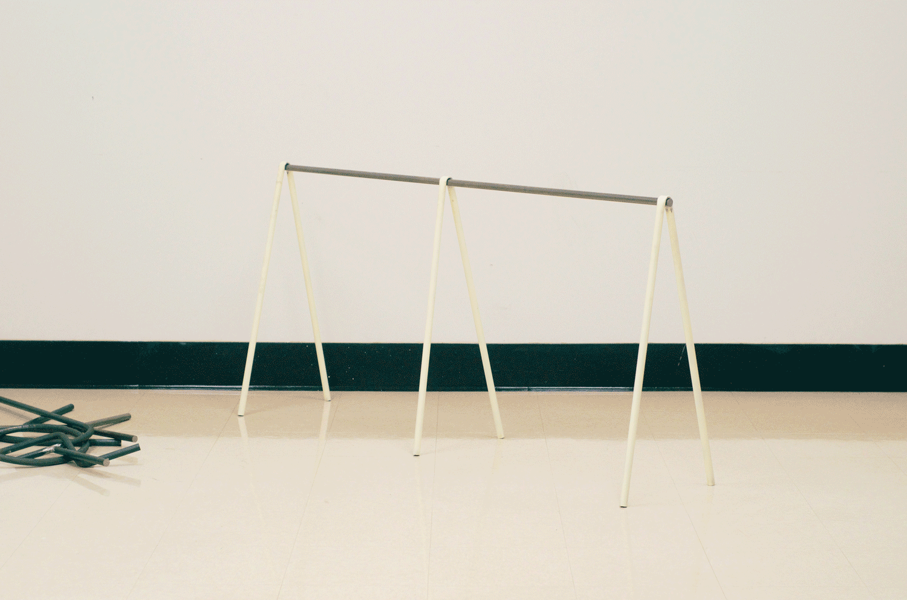
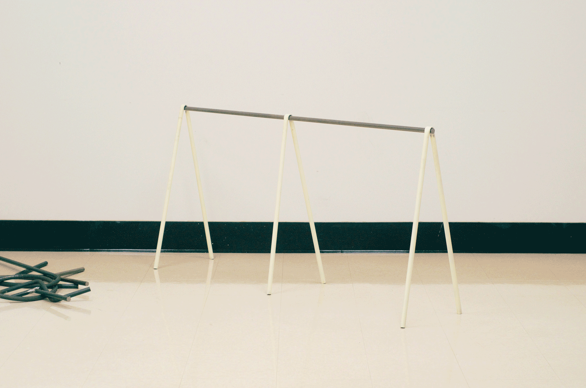
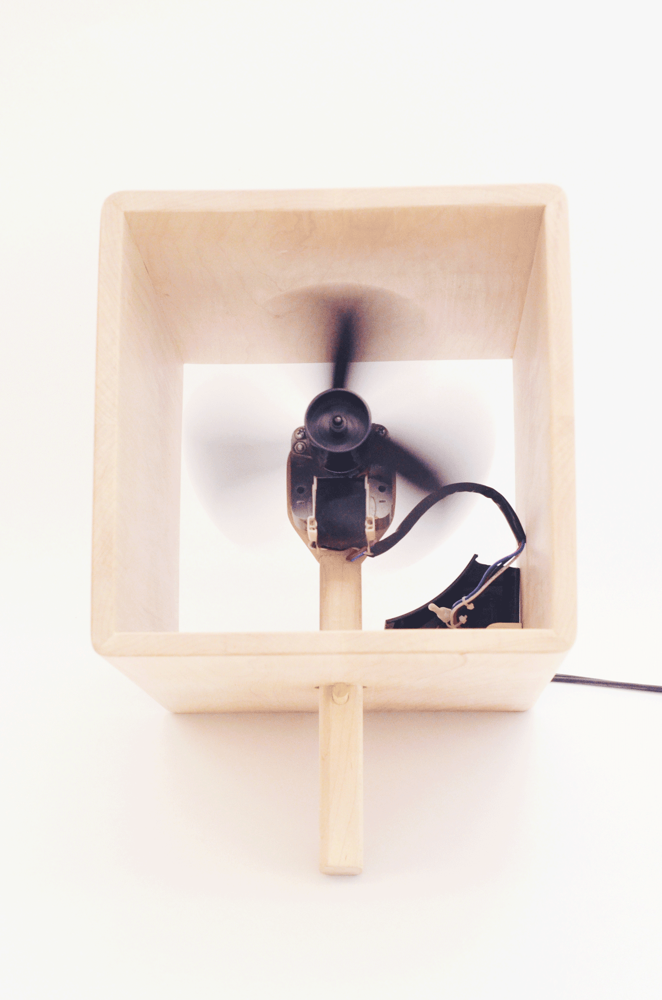
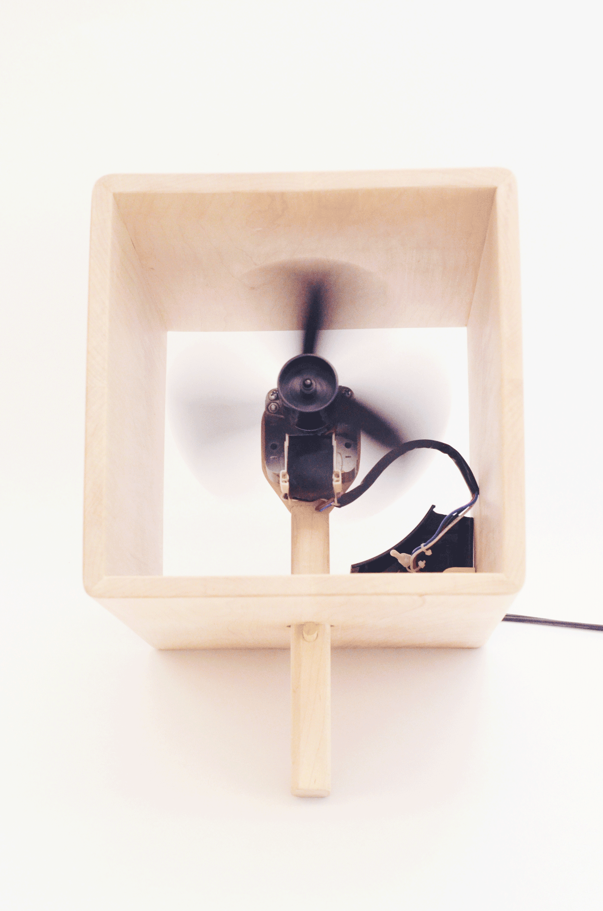

-
2016
For our senior show, I created two promotional posters which were hung next to eachother around campus. The posters aimed to acknowledge and represent the complexity, versatility, and actuality of the Department of Furniture Design in 2016 at RISD.
In one case, people simply know the department for our explorations in materials and making- often tied with a playful nickname "Furn." On the other hand, the work we produce is often involved with much larger ideas and practices. The department name begins to feel like a poor representation of its actual output.
Inkjet on newsprint.

-
2016
This table was inspired by communal architectural plans and the idea of microcosms that exist in architecture.
Through the architectural framing / cropping of the table plane view, a sense of magnitude is added to the object. Placing an object within the table may feel like placing an object within a much larger space. A person must physically move around and look through the table to access or view an object that may be hidden. The experience of the object is similar to that of one which is much larger.
Similar to larger communal architectural spaces, the center space highlights and frames a public work of this scale, which may be a vase of flowers or bowl of fruit.
The table was ultimately constructed in all oaks.

-
2016
"Display Objects" are the first objects of my Senior Degree Project titled "Exhibition."
These armatures are for the organization and framing of collections, areas of collection, and objects that inevitably decorate people's homes.
These are advanced concept models. Imagined in nylon - actually made of machined plywood, and PLA.


-
2015
A form study / concept for a column heater. The heater is intended for gallery spaces as a supplementary solution to basic climate control issues - that of which are crucial in preserving artworks. Understanding the distant way in which viewers would acknowledge and approach it - when placed in a space, I liked the idea that it may also behave as an artwork.
The heater can be stored vertically to take up minimal space.
As the precursor to my Senior Degree Project, this project served as a vehicle to raise questions on the use and perception of objects / products analogous to our experience of artworks. From a user and designer perspective, should objects / products be thought of as artworks? Should designers attempt to address human needs that are beyond utility? Could perceptions and sensibilities towards objects be shifted to a point where the man-made world is regarded as an exhibition space? Similarily, with the rapidly increasing documentation of the man-made world, does this then create a new standard and set of criteria for the practice of three-dimensional design?
This is an advanced concept model. Imagined in steel and polypropylene - actually made of machined plywood, and PLA. 


 



-
2015
I set up timzarras.me to act as an online sketchbook for web projects and other things.

/collage
Click and drag out the scraps to collage.


 

 

-
Hello!
I'm Tim. I'm a recent graduate of the Furniture Design Department at the Rhode Island School of Design.
Last summer (2015), I interned at Visibility where I assisted in developing products for various clients.
If you would like a copy of my resume or just want to say hello, contact me at tzarras@risd.edu.
I have an Instagram as well.
All project photos taken by Tim Zarras
Website built by Tim Zarras
© Tim Zarras 2016. All Rights Reserved